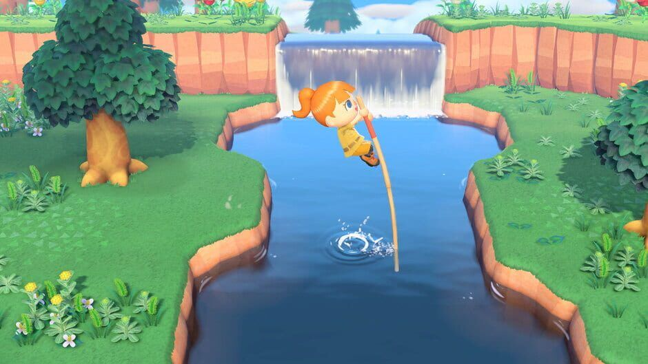
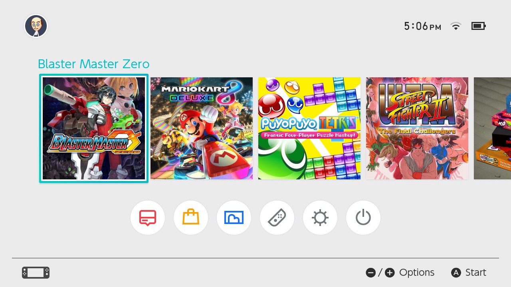
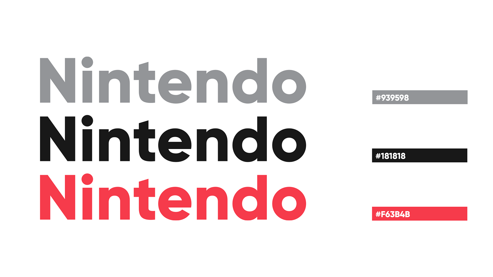

To redesign the Nintendo Switch game, Animal Crossing, I initially did user research.
Nintendo is an accessible platform, but it is missing a few essential components. According to Accessibility Guideline #1, this is the guideline. Nintendo does a great job doing this, but it is lacking in this. My role in this project was this.

I developed a few goals to improve on for this design. The first goal I had was to fix this. The second goal I had was to improve on this. The third goal I had was to remove this.

After following my goals, I came to this solution. By implementing this, I successfully improved efficiency by this much percent. It is now a more accessible platform. The next steps would be to perform a usability test to ensure this platform is accessible and usable.
